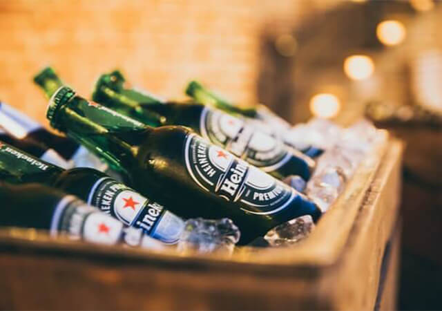
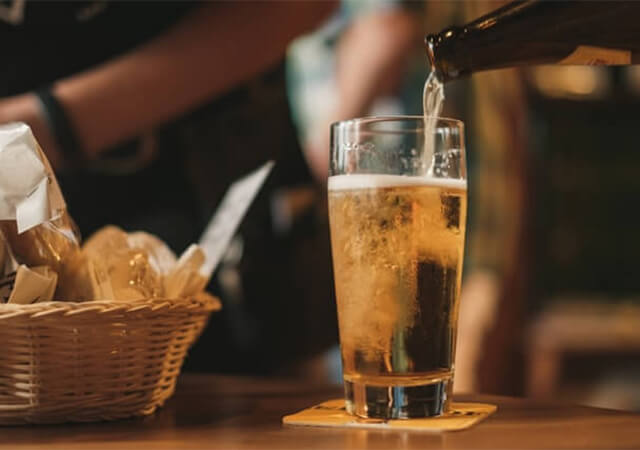
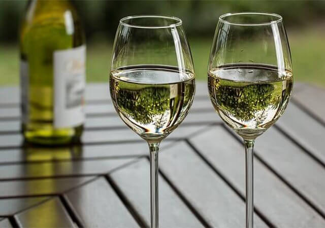
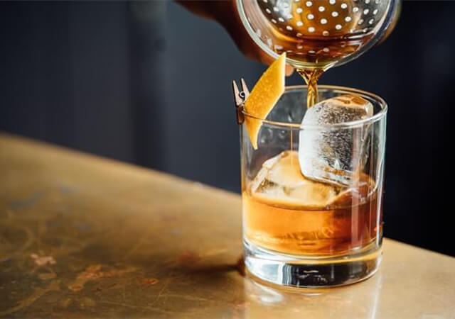

Drink Menu
ここまで数々の料理を紹介してきた。ここではどの料理にも合う飲み物を揃えている。パエリアとコロナ。鴨のローストとワイン、、、。自分好みの組み合わせを見つけてみて下さい。
DRINK LIST

Hineken
¥380
Hinekenとコロナなら、Hineken派です。ビンでの提供となります。※1杯目のレモン無料（2杯目以降はレモン1個20円となります）

Sapporo Bear
¥480
北海道といえばビールはsapporo。観光客のお客様は身分証明書のご提示で、2杯目以降250円！！

Wine(white)
¥750
十勝地方のワイン生産地「池田」町で採れた葡萄を使ったワイン。辛口でありながら、口当たりのまろやかさと飲みやすさが最高の一杯です。

DeWar's Highball
¥480
ウィスキーといえばDeWar'sでしょ。てことで個人的に好きなので置いています。 ロックかソーダ割かお選びください。